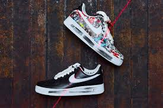

Sneaker introduction ~AIR FORCE1 ver~
男女問わず長年愛されてきたNIKE AIRFORCE1、BIGBANGのG-DORAGONとのコラボモデル、AF1 PARANOISEは生産数が多く多くの人が当選したのにもかかわらずプレミアム化されており定価の3,4倍の値段で取引されています。使用すると塗装が剥がれ中のデザインが見えてくる仕様に人気があります。 
Nike Airテクノロジーを搭載した初のコート用シューズとして登場して以来、大きく進化を遂げてきたAir Force 1。その後何年にもわたり、ブルース・キルゴアの先進的なデザインはコートだけでなくポップカルチャーにおけるNike Basketballフットウェアの基盤となりました。誕生から30年以上が経った今、文化的現象を巻き起こした揺るぎないステータスを称え、自らのデザインルーツに立ち返ったAir Force 1が登場します
世界にはエポックメイキングなアイテムが数々ありますが、ナイキのエア フォース 1は、そのリストに名を連ねるスニーカー史上における傑作と言ってよいでしょう。 登場は1982年。大統領専用機からその名を得たエア フォース 1は、ナイキ初のエアユニット搭載バスケットボールシューズとして華々しくデビューしました。 エア フォース 1は、今でこそその魅力をシンプルにして普遍的なアッパーデザインで語られますが、当時のコートでは分厚いミッドソールに搭載されたエアのクッション性と、サークルをモチーフにしたグリップ力に優れたアウトソールが評判を呼び、名だたるNBA選手から指名履きされていました。 現在のストリートスニーカーのアイコンとなったのは、80年代後半のこと。奇しくも廃盤によって、新たな存在価値が認められることになったのです。